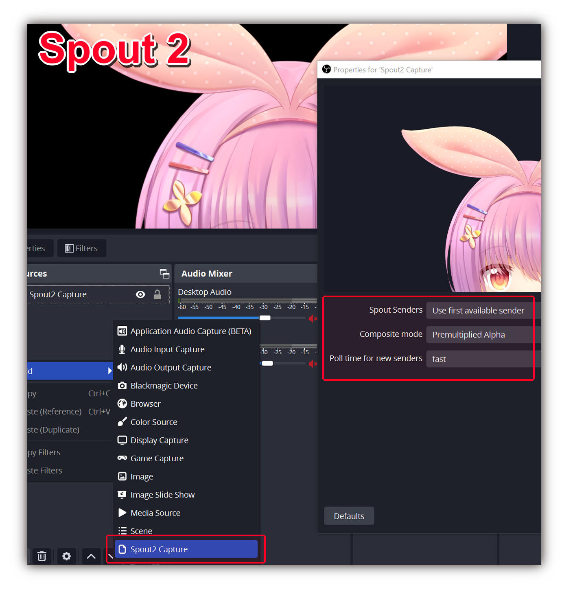
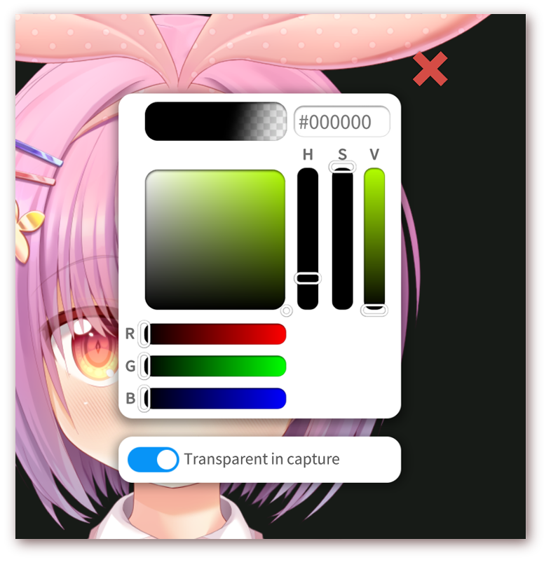

使用 OBS 录制/推流
重要！！首先阅读以下内容：我应该如何使用 OBS 进行录制/推流？¶
-
不要使用绿幕。VTube Studio 支持通过各种捕获方法获取 透明背景。
-
在 Windows 上，建议使用 Spout2。它速度很快，而且不会捕获 VTube Studio 界面。有关详细信息，请参阅下一节。
-
在 macOS 上，使用普通的游戏捕获或 NDI，这两种方式也支持透明视频流。但是，NDI 的性能可能不是很高。
使用 Spout2 推流无界面（透明背景）内容到 OBS¶
仅适用于 Windows。这是 VTube Studio 中 推荐 的 OBS 捕获方法，原因如下：
-
速度快（几乎不占用 CPU 资源）。
-
视频质量高且支持透明度（无需绿幕）。
-
不捕获 VTube Studio 界面。
-
同时支持任意数量的 VTube Studio 窗口（有关如何多次启动 VTube Studio 的信息，请参阅 此处）。
要使用此功能，您必须先安装 OBS 的 Spout2 插件。
⚠️ 重要提示：官方 Spout2 安装指南（在其网站上，[链接已删除]）提到“调整输出大小（源大小）”。如果您阅读了官方指南，请不要执行此步骤，因为它可能会破坏您的 OBS 场景！！！！！！ ⚠️¶
您可以从这里下载 Spout2 OBS 插件：https://github.com/Off-World-Live/obs-spout2-plugin/releases
不同的 OBS 版本对应不同的插件版本（例如 OBS v27、28、29……）。请确保下载适合您 OBS 版本的 Spout2 插件。
如果安装失败，请尝试使用另一种安装程序（提供两种，一种“手动”，一种“自动”）。另外，尝试以管理员身份运行安装程序。
然后，在 VTube Studio 中开启 Spout2。

最后，在 OBS 中按以下方式创建一个 Spout2 源。
注意：您也可以在此处直接选择 “VTubeStudioSpout”，而不是“第一个可用来源”。如果您有多个处于活动状态的 VTube Studio 窗口，它们将显示为 “VTubeStudioSpout2”、“VTubeStudioSpout3”……

如果您想使用透明背景（建议使用），请确保已在 VTube Studio 中选择“取色器背景”，并且开启“透明推流”选项。

使用普通游戏捕获（透明背景）推流到 OBS¶
在电脑端的 VTube Studio 中，选择 取色器背景。在 Windows 上，您可以启用此处的“透明推流”选项，这将使窗口在 OBS 录制时背景透明，因此无需使用绿幕/色度键抠图。
在 macOS 上，OBS 不支持此功能，因此可在此处选择任意颜色。您可以在 OBS 中通过 “色度键” 滤镜从视频捕获中移除该颜色。请记住，不要在 Live2D 模型中使用该颜色，否则模型的某些部分可能也会变为透明。
在 OBS 中添加背景，然后为 VTube Studio 添加捕获源：选择 “游戏捕获”。该方式支持透明背景，但仅适用于 Windows。
在 macOS 上，此选项称为 “Syphon 客户端”，但在 macOS 10.14 Mojave 及以上版本中无法使用（详见 https://github.com/zakk4223/SyphonInject），因此需要使用常规窗口捕获和色度键滤镜。


此时捕获已激活。在 macOS 上，您需要添加滤镜来移除绿色（或您选择的其他颜色）背景，操作方式：右键单击捕获源 → 滤镜 → 添加滤镜 → 色度键。
现在，您可以直接在 VTube Studio 或 OBS 中移动/缩放/旋转角色，将其放置在屏幕上的任意位置。
另外，您也可以使用 VTube Studio 中的 虚拟摄像头功能 或 NDI 创建摄像头推流，然后直接在 Zoom、Discord 等应用程序中使用（请参阅常见问题）。
使用 NDI 推流无界面（透明背景）内容到 OBS¶
建议使用 OBS“游戏捕获”录制 VTS 窗口。或者，您可以使用虚拟摄像头或 Newtek NDI（网络设备接口）创建视频流，作为 OBS 等软件的输入源。
NDI 流的质量和延迟表现非常好，还支持透明背景（无需色度/颜色键抠图），且完全不录制 VTube Studio 界面。使用 NDI 时，VTS 的 CPU 利用率可能会上升。OBS 插件适用于 macOS 和 Windows 系统。
OBS 插件页面：https://obsproject.com/forum/resources/obs-ndi-newtek-ndi%E2%84%A2-integration-into-obs-studio.528/
OBS 插件下载（Win/Mac）：https://github.com/Palakis/obs-ndi/releases/tag/4.9.1
要使用 NDI，请从上面链接的 GitHub 页面下载插件（Windows 为 .exe 格式，macOS 为 .pkg 格式）并安装。在 VTube Studio 中，开启 “摄像头设置”选项卡 中的 NDI 开关。可以同时启用 NDI 和虚拟摄像头，但不建议这样做。
VTube Studio 允许您在 NDI 4 和 5 之间选择。如果 NDI 5 在您的电脑上运行无延迟，建议使用 NDI 5。另外，VTube Studio 创建的 NDI 流可在整个本地网络中可见，因此您甚至可以在另一台电脑上运行 OBS，并读取 VTube Studio 的 NDI 流（除非防火墙或网络安全设置阻止此功能）。
与仅支持单路流的虚拟摄像头不同，若您打开了多个 VTube Studio 实例，它们都会在 OBS 中显示为不同（带编号）的 NDI 源。
在 OBS 中，建议进行以下设置：

使用虚拟摄像头推流无界面（透明背景）内容到 OBS¶
操作方式与 NDI 类似。只需 在 VTube Studio 设置中开启虚拟摄像头，切换到取色器背景，并确保勾选 “在 OBS 中透明”。
在 OBS 中，您会看到一个名为 “VTubeStudioCam” 的摄像头。按以下设置（分辨率除外）将其添加到场景中：

OBS 的常见问题¶
虚拟摄像头不显示或显示为绿色！¶
请确保您确实已在 VTube Studio 中开启虚拟摄像头。进入 VTube Studio 的摄像头设置，检查“激活虚拟摄像头（Activate Virtual Webcam）”是否已开启。
OBS 无法捕获 VTube Studio¶
尝试以管理员身份启动 OBS 和 VTS。有关操作方法的更多信息，请查看 此页面。
此外，部分应用程序（例如 “RTSS Rivatuner”）会阻止 OBS 捕获 VTube Studio 等应用。
我的游戏捕获或 Spout2 捕获不起作用！¶
请确保 OBS 以管理员身份运行。
另外，若您使用的是笔记本电脑（或多 GPU 电脑），且游戏捕获/Spout2 捕获显示为黑色/不可见，则可能是 VTube Studio 和 OBS 运行在不同的 GPU 上。许多笔记本电脑都配有一颗集成显卡（包含在 CPU 中）和一颗独立显卡。请确保 OBS 和 VTS 均在独立显卡上运行。
具体操作方法详见：https://obsproject.com/kb/gpu-selection-guide